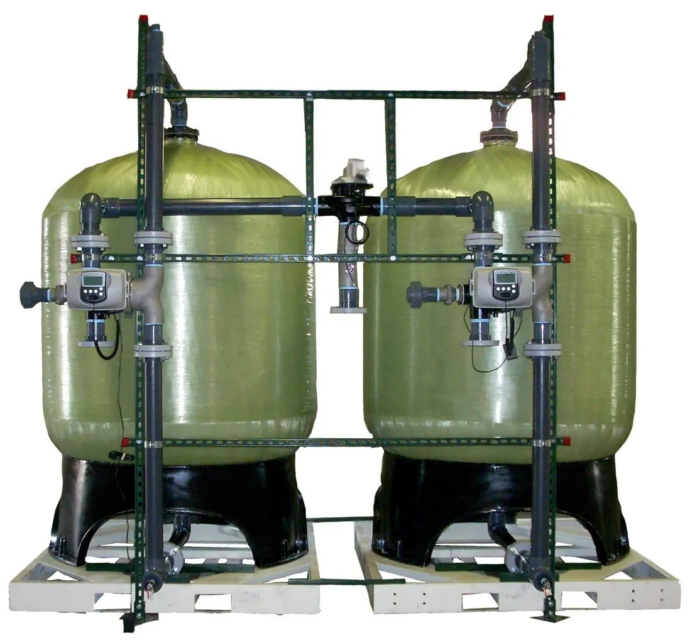
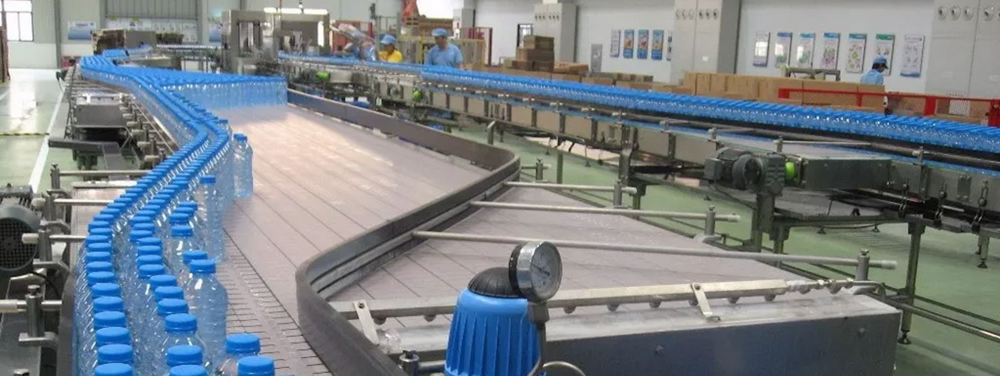
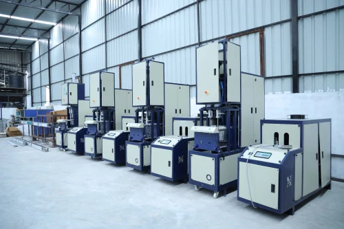
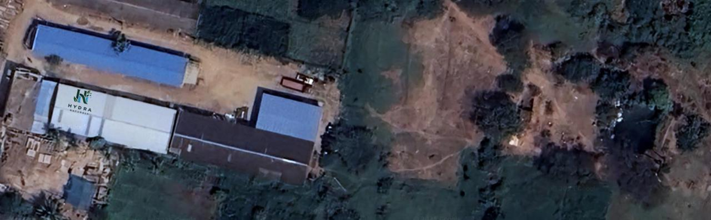

The Brand OUR STORY

untainted water is becoming increasingly difficult. Processed beverages filled
with artificial ingredients have taken over the shelves, making something as
simple as hydration complicated
At Hiscope Hydra Naturals, we are redefining what it means to truly hydrate
by going back to nature. Our water is not just another bottled drink; it is an
experience of purity, refreshment, and well-being, just as nature intended.
When you choose Hiscope Hydra Naturals, you are drinking water that has
been preserved in its most authentic form, untouched by artificial enhancements

More than Just Hydration – A Lifestyle Choice Hydration isn’t just about quenching
thirst—it’s about nourishing your body, refreshing your mind, and embracing a lifestyle
that values health and wellness. Hiscope Hydra Naturals is crafted for those who believe
in choosing better, not just for themselves but also for the planet.
With every sip, you are choosing:
✅ Water that is naturally enriched—free from artificial additives.
✅ Minimal processing—allowing nature to do its work.
✅ Sustainability—because the environment matters.
✅ Wellness-focused hydration—supporting a balanced, healthy life.

refreshing water while being mindful of our environmental impact. Initially, we considered
manufacturing our own plastic bottles, but we realized that adding more plastic production
facilities could contribute to environmental harm. Instead, we chose to partner with responsible
third-party manufacturers who follow sustainable practices, allowing us to reduce our carbon
footprint while ensuring high-quality packaging. By making this conscious choice, we focus
on delivering hydration responsibly. Our future goal is to transition to recycled plastic (rPET)
and promote eco-friendly packaging solutions, ensuring that every sip you take supports a
healthier planet.
